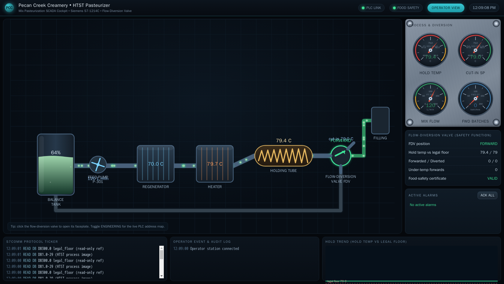
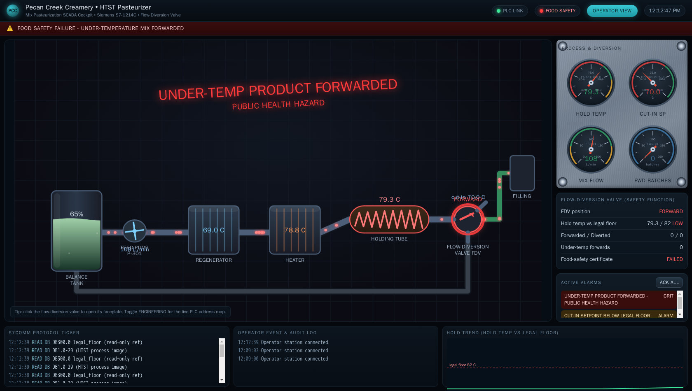

Exercise OTSOC-4.3: The Pasteurizer Diversion Valve
Engagement Status
| Client | Pecan Creek Creamery (fictional) |
|---|---|
| Role | OT SOC Analyst, Process Safety and Food Safety |
| Phase | Safety Detection Response Reporting |
What you know so far: The ice-cream mix line runs through an HTST (high temperature short time) pasteurizer. Every drop of mix must reach a cut-in temperature before it is allowed forward to filling. A flow-diversion valve (FDV) enforces that rule in hardware. Plant engineering wants you to learn the FDV as a safety-instrumented function, trace a clean forward-flow cycle read-only, and be able to name the two ways an attacker defeats it.
Scenario
The HTST pasteurizer at past.pcc.local (S7comm, port 102) is the public-health critical control on the mix line. The mix must reach the cut-in temperature, around 79 C, before the flow-diversion valve sends it forward to filling. Below cut-in the FDV returns the mix to the balance tank for re-processing. Forwarding mix below cut-in is the food-safety failure: a critical-control-point breach that puts under-processed product in front of customers. Your assignment is to establish the legal hold relating temperature to forward-flow, trace a clean cycle where the FDV correctly forwards hot mix, read the clean-cycle marker over S7comm, and name the two defeat paths an attacker uses against this one safety function. You read only. You do not write to the pasteurizer.
Why this matters
In OT the priority order is inverted: Safety, then Integrity, then Availability, then Confidentiality. On a pasteurizer Safety is food safety. The FDV is a safety-instrumented function whose consequence is public health, not equipment damage. Pasteurization is the step that kills the pathogens raw dairy can carry. The cut-in temperature and the holding time are set by food-safety regulation, and the FDV is the physical interlock that guarantees no mix bypasses that step. When the FDV diverts under-temperature mix back to the tank, it is doing its job. When under-temperature mix forwards, the protection has failed and a recall-class event is in motion.
A defender protects what they understand. Knowing the FDV as a safety function, not just a valve, is what lets you recognize a defeat as a public-health emergency rather than a process hiccup. The two defeat paths are simple and the workbook names both: lower the cut-in setpoint so under-processed mix counts as legal, or force the FDV to forward-flow regardless of temperature. A clean cycle traced read-only is the baseline you measure every later alarm against, the same way OTSOC-4.1 established the calm SIS baseline before the tamper.
The FDV publishes a clean-cycle marker while it is forwarding correctly. Recover it as your flag.
| Credentials in scope | Username | Password | Where it is used |
|---|---|---|---|
| None | n/a | n/a | S7comm on this pasteurizer is unauthenticated for reads |
The operator cockpit
Pecan Creek Creamery runs a live operator cockpit for the HTST line. Open it in a browser at the address shown for hmi.pcc.local in the Exercise Network panel (HTTP, port 80). The cockpit lays the mix path out left to right: balance tank, feed pump, regenerator, heater, holding tube, and the flow-diversion valve that decides forward or divert. The gauges and the food-safety panel on the right show the hold temperature, the cut-in setpoint, the legal floor, and the live forward and divert counts, so you can watch the clean cycle you are about to trace read-only.

Flip the cockpit into its Engineering view and every element is labelled with the live PLC address behind it, so the cut-in setpoint reads DB1.2 and the hold temperature reads DB1.0 straight off the HMI. The same register map you read by hand in the walkthrough sits one click away on the operator console.

Learning Objectives
- Explain the HTST flow-diversion valve as a safety-instrumented function protecting public health
- Establish the legal hold relating cut-in temperature to FDV forward-flow
- Trace a clean forward-flow cycle and confirm the FDV reads FORWARD with the divert counter steady
- Read the DB200 clean-cycle marker over S7comm
- Name the two attacker defeat paths against the flow-diversion valve
| Detail | Value |
|---|---|
| Difficulty | Intermediate |
| Estimated Time | 40 to 50 minutes |
| Prerequisites | OTSOC plant tour, basic S7 datablock addressing |
| Flag | Source | Found? |
|---|---|---|
OCR{past_clean_cycle_<masked>} |
Pasteurizer DB200 clean-cycle block |
Background: The HTST Datablock
Siemens S7 controllers expose process data in datablocks (DB). You read a DB by number, byte offset, and length with python-snap7, the standard S7comm client. The pasteurizer stores temperatures as degrees Celsius times 100, big-endian, so 7900 is 79.00 C.
| DB / offset | Name | Meaning |
|---|---|---|
| DB1 offset 0 | hold_temp_pv |
product hold temperature, C times 100 |
| DB1 offset 2 | cut_in_sp_c |
cut-in (forward-flow) setpoint, 7900 = 79.00 C |
| DB1 offset 16 | fdv_state |
0 = DIVERT, 1 = FORWARD |
| DB1 offset 18 | divert_count |
legal diversions back to the balance tank |
| DB1 offset 20 | forward_count |
forward-flow cycles |
| DB300 offset 0 | cut_in_legal_floor |
7900, read-only legal floor |
| DB200 | clean-cycle assessment | ASCII marker while the cycle stays clean |
The legal floor is your ground truth
The read-only legal floor at DB300 holds 7900 (79.00 C). The writable cut-in setpoint at DB1 offset 2 is what the FDV logic uses, and what an attacker lowers. Comparing the live cut-in against the legal floor is the same tamper-baseline idea as the SIS read-only default in OTSOC-4.2.
Before You Begin: Populate Variables From the Panel
After the lab reaches Running, the Exercise Network panel lists past.pcc.local. Read its IP into a variable.
Kali - capture the pasteurizer IP into a variable
A succeeded! line means the pasteurizer answers on S7comm (ISO-TSAP, port 102) and the variable is set for the session.
Walkthrough
Step 1: Establish the Legal Hold
Read the read-only legal floor at DB300 offset 0 and the live cut-in setpoint at DB1 offset 2 together. The legal floor is the temperature the food-safety rule requires; the live setpoint is what the FDV logic currently enforces. On a clean plant they agree. Each value is a big-endian uint16 in C times 100, so divide by 100 to read degrees.
Kali - read the legal floor and the live cut-in setpoint
python3 - "$PAST" <<'PY'
import sys, struct, snap7
c = snap7.client.Client()
c.connect(sys.argv[1], 0, 1, tcpport=102)
floor = struct.unpack(">H", c.db_read(300, 0, 2))[0] # DB300 legal floor
cut_in = struct.unpack(">H", c.db_read(1, 2, 2))[0] # DB1 cut_in_sp_c
print(f"legal floor (DB300): {floor} = {floor/100:.2f} C")
print(f"cut-in setpoint (DB1): {cut_in} = {cut_in/100:.2f} C")
c.disconnect()
PY
Both read 7900 (79.00 C). The live cut-in matches the legal floor, so the FDV is enforcing the food-safety rule as designed. A cut-in below the floor would be the first defeat path; you confirm here that it is not happening on a clean cycle.
Step 2: Trace a Clean Forward-Flow Cycle
With the hold temperature above the cut-in, the FDV should read FORWARD and the divert counter should hold steady. Read the hold temperature (DB1 offset 0), the FDV state (offset 16), and the divert counter (offset 18) in one connection.
Kali - trace the FDV state and the divert counter
python3 - "$PAST" <<'PY'
import sys, struct, snap7
c = snap7.client.Client()
c.connect(sys.argv[1], 0, 1, tcpport=102)
hold = struct.unpack(">H", c.db_read(1, 0, 2))[0] # hold_temp_pv
cut_in = struct.unpack(">H", c.db_read(1, 2, 2))[0] # cut_in_sp_c
fdv = struct.unpack(">H", c.db_read(1, 16, 2))[0] # fdv_state
divert = struct.unpack(">H", c.db_read(1, 18, 2))[0] # divert_count
print(f"hold_temp: {hold/100:.2f} C cut_in: {cut_in/100:.2f} C")
print(f"fdv_state: {fdv} ({'FORWARD' if fdv==1 else 'DIVERT'})")
print(f"divert_count: {divert}")
c.disconnect()
PY
A hold temperature above 79 C, fdv_state of 1 (FORWARD), and a divert counter that is not climbing is the clean cycle: hot mix is going forward to filling and nothing is being diverted because nothing is under temperature. Run the block twice a few seconds apart; the divert counter staying put confirms the FDV is not bouncing between states.
Step 3: Read the Clean-Cycle Marker
While the cycle stays clean (temperature above cut-in, FDV FORWARD, divert counter stable, and no writes to the FDV path) the assessment block at DB200 carries the clean-cycle marker. A wire write to the FDV path flips the block to DIRTY_FDV_WRITE_DETECTED, so reading is the only way to keep it clean. Read 32 bytes from DB200 and decode the ASCII up to the first null.
Kali - read the DB200 clean-cycle marker
A clean read returns the marker in OCR{past_clean_cycle_<masked>} form. Reading DIRTY_FDV_WRITE_DETECTED instead means the FDV path was written and the assessment latched dirty; on this exercise you stay read-only, so a clean read is expected. The marker is your flag.
Step 4: Name the Two Defeat Paths
Understanding the FDV as a safety function means knowing exactly how it can be defeated. There are two paths, and a defender should be able to name both.
The two FDV defeat paths
Path 1 - lower the cut-in setpoint.
Write DB1 offset 2 (cut_in_sp_c) below the 7900 legal floor.
Under-processed mix now reads as "above cut-in" and forwards legally.
Detection: cut_in_sp_c < DB300 legal floor while the FDV forwards.
Path 2 - force forward-flow.
Set the force-forward override so the FDV reports FORWARD regardless
of temperature. The diversion logic is bypassed entirely.
Detection: FDV FORWARD while hold_temp is below cut_in, divert_count
not rising when it should.
Both paths end the same way: under-temperature mix forwarded to filling. The next exercise reconstructs an attack that used path 1 and quantifies the damage. Naming the paths now is what lets you recognize the signature when you see it.

Output Interpretation
- The live cut-in setpoint matching the DB300 legal floor (both 7900) confirms the food-safety rule is being enforced.
fdv_stateof 1 (FORWARD) with a steady divert counter is a clean cycle: hot mix forwarding, nothing diverted.- A clean read of DB200 returns the marker;
DIRTY_FDV_WRITE_DETECTEDwould mean the FDV path was written. - The two defeat paths both produce the same harm, under-temperature mix forwarded, by different means: lower the bar (cut-in) or remove the bar (force-forward).
Analysis Questions
1. Why is the flow-diversion valve a safety-instrumented function rather than just a process valve?
Reveal answer
The FDV enforces a food-safety rule in hardware: mix that has not reached the regulated cut-in temperature is physically prevented from going forward to filling and is returned to the balance tank instead. Its failure consequence is public health, under-processed dairy reaching customers, not equipment damage or lost product. A protective function whose consequence is human safety is a safety-instrumented function.
2. Why compare the live cut-in setpoint against the DB300 legal floor instead of trusting the setpoint alone?
Reveal answer
The DB300 legal floor is read-only and holds the regulated temperature, so it cannot be quietly moved. The live cut-in at DB1 offset 2 is writable, which is exactly what defeat path 1 targets. Comparing the writable setpoint against the immutable floor is how a defender detects that the bar was lowered. A setpoint that disagrees with the floor is the tamper signature.
3. The exercise insists on read-only access. What happens if you write to the FDV path to test it?
Reveal answer
A wire write to the FDV path flips the DB200 assessment block to DIRTY_FDV_WRITE_DETECTED and latches it, so the clean-cycle marker is no longer readable. Beyond losing the flag, writing to a live safety function is the exact action an attacker takes; a defender enumerates read-only so they never become the source of the very event they are hunting.
4. Both defeat paths produce under-temperature forwarding. Why distinguish them?
Reveal answer
The two paths leave different signatures and call for different detections. The lowered-cut-in path shows a setpoint below the legal floor; the force-forward path shows the FDV forwarding while the hold temperature is below cut-in with the divert counter flat. Knowing which path was used tells the responder what the attacker touched, which datablock to restore, and how to write a detection that catches it next time.
Key Takeaways
- The HTST flow-diversion valve is a safety-instrumented function; its consequence is public health, which is why Safety ranks first.
- The legal hold is simple: reach cut-in temperature or divert. Forwarding under-temperature mix is the food-safety failure.
- A clean cycle reads FDV FORWARD with a steady divert counter and a cut-in that matches the DB300 legal floor.
- The DB200 marker is readable only while the cycle stays clean; a write to the FDV path latches it dirty.
- Two defeat paths exist: lower the cut-in setpoint below the legal floor, or force the FDV to forward-flow. Both forward under-temperature mix.
Capture the Flag
Recover the clean-cycle marker from DB200 on past.pcc.local, decoded to ASCII while the cycle stays clean. Submit it in the OCR platform.
| Flag | Where | Form |
|---|---|---|
| Clean-cycle marker | Pasteurizer DB200 assessment block | OCR{past_clean_cycle_<masked>} |